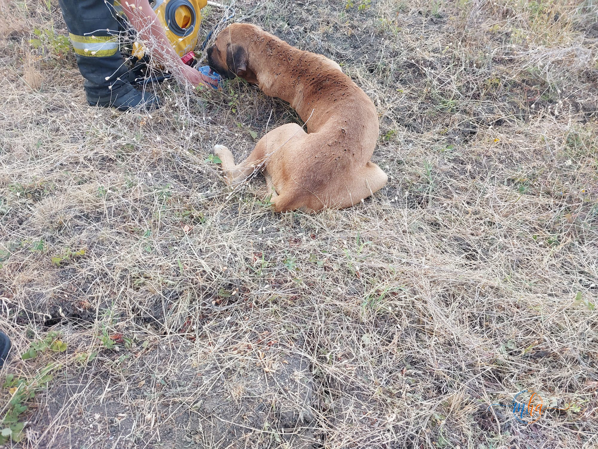
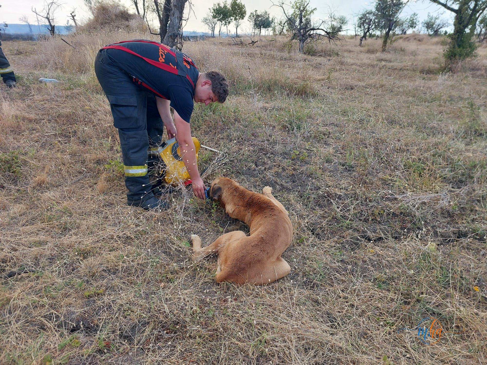
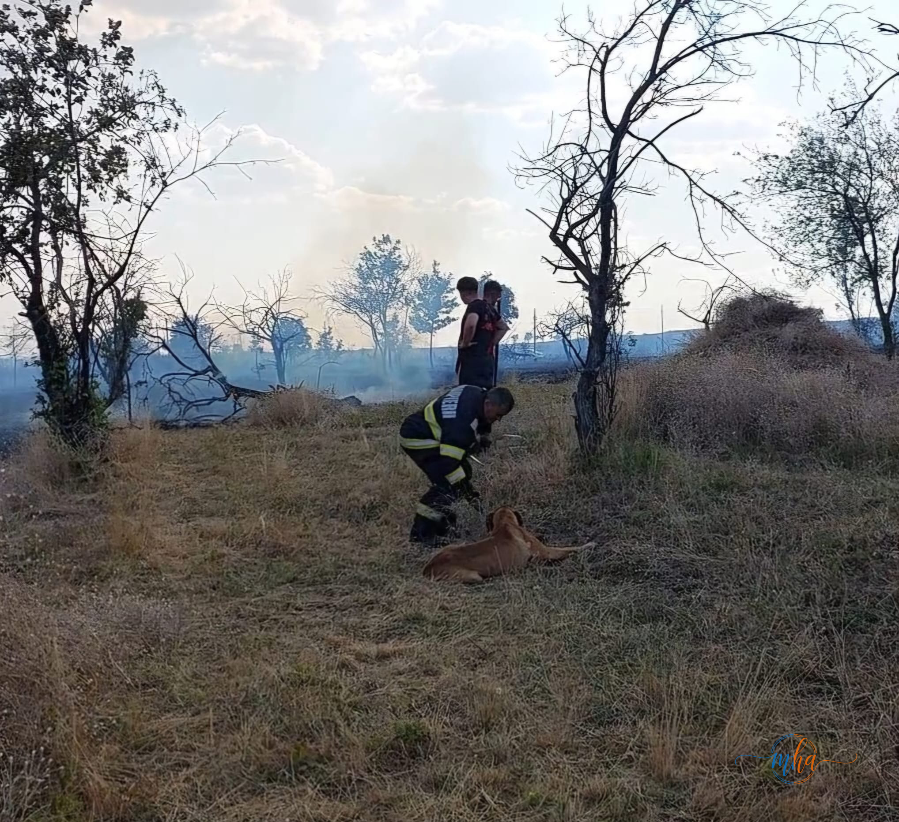

Luptă fără oprire cu flăcările la Bârda. Pompierii au salvat gospodării și un cățel epuizat în mijlocul incendiului
Un incendiu de vegetație uscată izbucnit în localitatea Bârda a mobilizat, în cursul zilei de ieri, forțe importante de intervenție, după ce flăcările au amenințat gospodăriile oamenilor. În condiții de caniculă extremă, cu temperaturi ce au depășit 40 de grade Celsius, pompierii au dus o luptă contracronometru pentru limitarea și lichidarea incendiului, reușind să împiedice extinderea focului către locuințe și alte bunuri aflate în pericol.
Intervenția a fost una dintre cele mai dificile din această perioadă, atât din cauza temperaturilor ridicate, cât și a vegetației uscate, care a favorizat propagarea rapidă a flăcărilor. Fumul dens, rafalele de vânt și terenul dificil au făcut ca fiecare minut să conteze, iar salvatorii au fost nevoiți să acționeze fără întrerupere pentru a proteja comunitatea.
Pentru cei aflați în teren, o astfel de misiune înseamnă mult mai mult decât simpla stingere a unui incendiu. Înseamnă ore întregi petrecute în echipamente grele de protecție, la temperaturi sufocante, în apropierea unor flăcări care depășesc uneori înălțimea unui om. Fiecare pas este făcut cu efort, fiecare litru de apă este folosit cu grijă, iar fiecare decizie poate face diferența dintre un incendiu controlat și o tragedie.
Pompierii care au intervenit la Bârda și-au dus misiunea până la capăt cu profesionalism și determinare, chiar și atunci când oboseala și căldura și-au spus cuvântul. În astfel de momente, rezistența fizică este dublată de curaj și de dorința de a-i proteja pe cei aflați în pericol.
Gestul care a impresionat pe toată lumea
În mijlocul intervenției, printre fum și flăcări, salvatorii au descoperit un cățel prăbușit la pământ, complet epuizat și speriat. Animalul nu mai avea puterea să fugă din calea incendiului, fiind prins în zona afectată de foc.
Deși fiecare secundă era importantă pentru limitarea incendiului, pompierii nu au rămas indiferenți. S-au oprit, i-au oferit apă din rezervele pe care le aveau asupra lor și l-au transportat într-o zonă sigură, departe de pericol.
Imaginea cățelului salvat spune poate mai mult decât orice cuvânt despre misiunea acestor oameni. Chiar și în cele mai dificile condiții, atunci când luptă cu focul și încearcă să protejeze vieți și bunuri, ei găsesc puterea să salveze orice ființă aflată în nevoie.
Incendiile de vegetație – un pericol care se repetă
Din păcate, incendiile de vegetație uscată continuă să reprezinte una dintre cele mai frecvente intervenții ale pompierilor în sezonul cald. În multe situații, acestea sunt provocate de folosirea focului deschis pentru igienizarea terenurilor, de neglijență sau de alte acțiuni care scapă rapid de sub control.
Condițiile meteorologice din această perioadă, caracterizate prin temperaturi foarte ridicate, umiditate scăzută și vânt, transformă orice foc aparent neînsemnat într-un incendiu care se poate extinde cu o viteză impresionantă. În doar câteva minute, flăcările pot cuprinde hectare întregi de vegetație, pot amenința gospodării, culturi agricole, păduri și chiar vieți omenești.
Fiecare astfel de intervenție presupune mobilizarea unor importante resurse umane și materiale. Autospeciale, echipamente, combustibil și sute de ore de muncă sunt necesare pentru stingerea unor incendii care, în multe cazuri, ar fi putut fi prevenite printr-un comportament responsabil.
Responsabilitatea fiecăruia poate salva vieți
Specialiștii atrag atenția că arderea vegetației uscate este extrem de periculoasă și poate avea consecințe dramatice. Pe lângă distrugerea mediului și pierderile materiale, astfel de incendii pun în pericol pompierii, voluntarii și locuitorii din zonele afectate.
Autoritățile recomandă populației să nu utilizeze focul deschis pentru curățarea terenurilor, să nu arunce la întâmplare țigări aprinse și să anunțe imediat serviciile de urgență dacă observă izbucnirea unui incendiu.
Intervenția de la Bârda demonstrează încă o dată cât de importantă este activitatea pompierilor și cât de mult depinde siguranța comunităților de profesionalismul și sacrificiul lor. În spatele fiecărei misiuni se află oameni care își asumă riscuri uriașe pentru ca alții să fie în siguranță.
Un gest iresponsabil poate declanșa un dezastru, în timp ce un gest responsabil poate salva vieți, gospodării și natura. Respectarea regulilor de prevenire a incendiilor nu este doar o obligație legală, ci și o dovadă de respect față de cei care, zi de zi, luptă cu flăcările pentru binele tuturor.
Galerie foto


